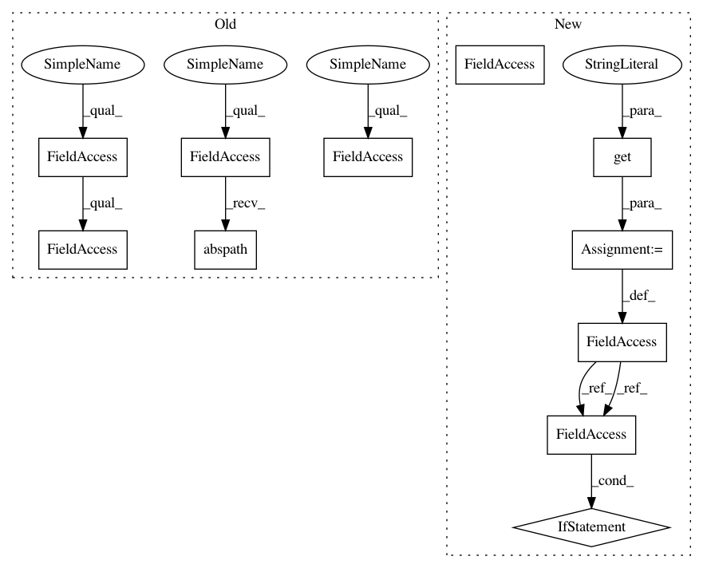

3d95882c14d31f3d1e358c39dcf34dfecdcc75a3,tgen/seq2seq.py,Seq2SeqGen,__init__,#Seq2SeqGen#Any#,362
Before Change
self.train_summary_writer = None
timestamp = str(int(time.time()))
self.out_dir = os.path.abspath(os.path.join(os.path.curdir, "seq_runs", timestamp))
def _init_training(self, das_file, ttree_file, data_portion,
context_file, validation_files, lexic_files):
Load training data, prepare batches, build the NN.
After Change
self.use_context = cfg.get("use_context", False)
// Train Summaries
self.train_summary_dir = cfg.get("tb_summary_dir", None)
if self.train_summary_dir:
self.loss_summary_seq2seq = None
self.train_summary_op = None
self.train_summary_dir = None
self.train_summary_writer = None
def _init_training(self, das_file, ttree_file, data_portion,
context_file, validation_files, lexic_files):
Load training data, prepare batches, build the NN.
In pattern: SUPERPATTERN
Frequency: 3
Non-data size: 11
Instances
Project Name: UFAL-DSG/tgen
Commit Name: 3d95882c14d31f3d1e358c39dcf34dfecdcc75a3
Time: 2017-12-14
Author: o.dusek@hw.ac.uk
File Name: tgen/seq2seq.py
Class Name: Seq2SeqGen
Method Name: __init__
Project Name: UFAL-DSG/tgen
Commit Name: 3d95882c14d31f3d1e358c39dcf34dfecdcc75a3
Time: 2017-12-14
Author: o.dusek@hw.ac.uk
File Name: tgen/tfclassif.py
Class Name: RerankingClassifier
Method Name: __init__
Project Name: UFAL-DSG/tgen
Commit Name: 3d95882c14d31f3d1e358c39dcf34dfecdcc75a3
Time: 2017-12-14
Author: o.dusek@hw.ac.uk
File Name: tgen/seq2seq.py
Class Name: Seq2SeqGen
Method Name: __init__
Project Name: sebp/scikit-survival
Commit Name: 0df6037e8023f36ad673954d27b61266c0397b78
Time: 2016-12-26
Author: sebp@k-d-w.org
File Name: doc/conf.py
Class Name:
Method Name: